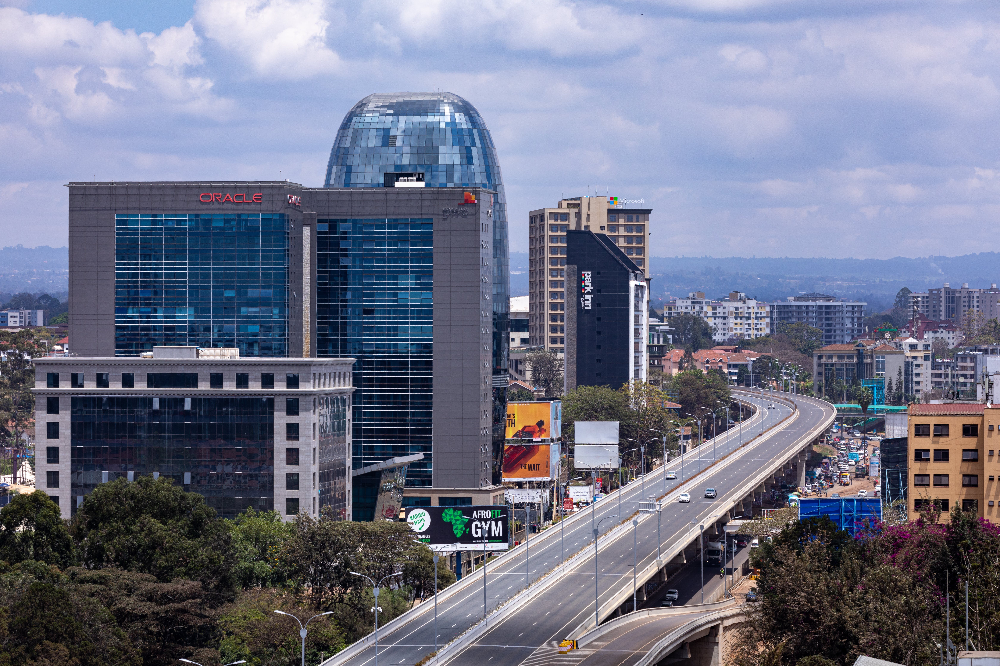

Nairobi City
All files and folders adhere to the naming conventions outlined in the course.
THE NAIROBI CITY CHAMBER OF COMMERCE
The site name section includes a site name containing the word "chamber."
Site Purpose
The Nairobi Chamber of Commerce acts as a regional economic catalyst, leadership convener and community champion. We promote business through member services, economic and community development, and public policy that balances economic prosperity.
- Promote local businesses and foster networking.
- Attract tourists and showcase the city's attractions.
Scenarios
- What is the purpose of the Nairobi Chamber of Commerce website?
- How can the chamber benefit local businesses in Nairobi?
- Is the chamber open to businesses of all sizes?
Color Scheme
Accent Color: #FFFFFF (White), Accent Color: #FFD700 (Yellow), Primary Gray #333333, Secondary Gray #666666, Black #000000.
Typography
The typography section indicates the font family(s) to be used on the site.
At least one font is selected, and where it will be applied is provided.
Selected Google Font Used
"https://fonts.googleapis.com/css2?family=Roboto:wght@400&family=Montserrat:wght@600&display=swap" rel="stylesheet">